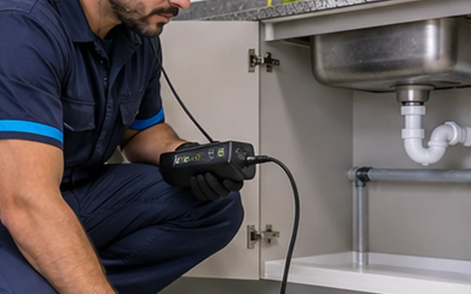
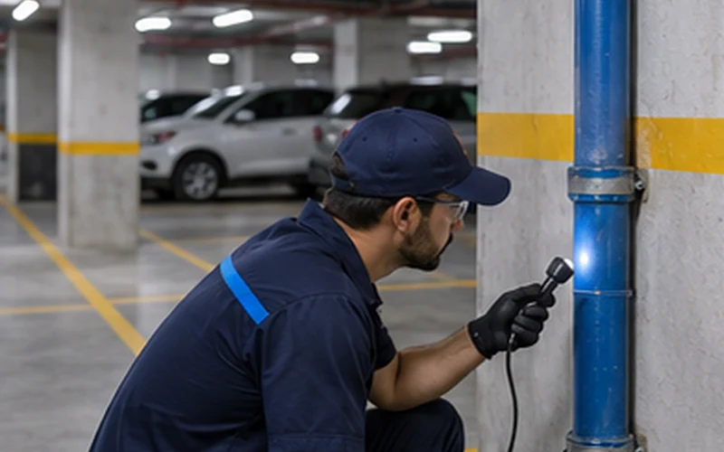
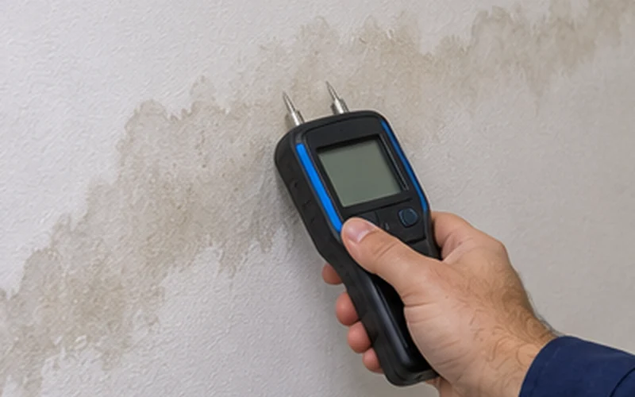
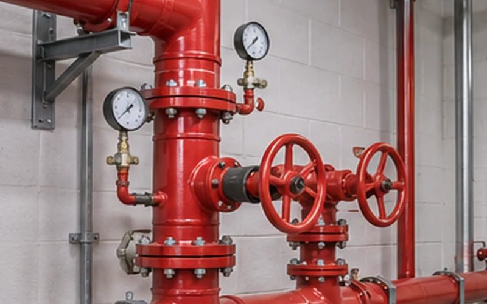
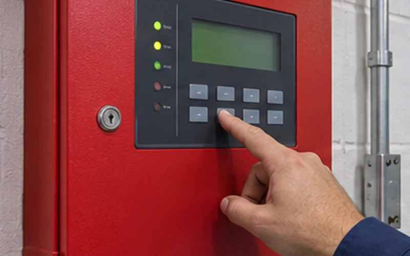
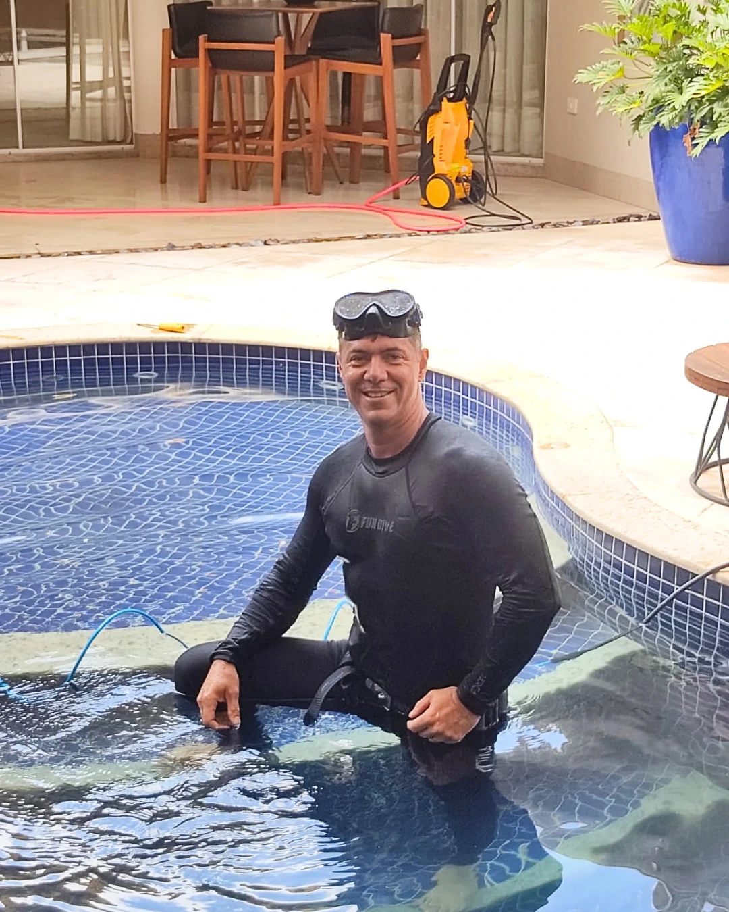

Caça vazamento residencial
Localizamos vazamentos em paredes, pisos e tubulações da sua casa, para você resolver o problema na origem.
Solicitar orçamentoEMERGÊNCIA 24H • MARINGÁ E REGIÃO
Localizamos o vazamento com equipamentos de ponta, para você resolver o problema na origem.
NOSSOS SERVIÇOS
Detectamos o vazamento com equipamentos de ponta, sem adivinhação. Escolha o serviço e peça seu orçamento pelo WhatsApp.

Localizamos vazamentos em paredes, pisos e tubulações da sua casa, para você resolver o problema na origem.
Solicitar orçamentoDetecção de vazamentos em comércios, indústrias e prédios comerciais, com atendimento ágil para evitar prejuízo.
Solicitar orçamento
Atendimento em áreas comuns, garagens, caixas d'água e prumadas, com diagnóstico claro para o síndico.
Solicitar orçamento
Identificamos a origem da infiltração e da mancha de umidade, seja no seu apartamento ou no vizinho.
Solicitar orçamento
Localização de vazamentos e inspeção em redes de hidrantes e tubulações de combate a incêndio.
Solicitar orçamento
Atendimento em sistemas de alarme de incêndio para residências, empresas e condomínios.
Solicitar orçamentoLocalização de vazamentos em piscinas com mergulho, sem esvaziar nem quebrar sem necessidade.
Solicitar orçamentoNão achou o seu caso? Descreva o problema no WhatsApp.
Falar com a PontesCOMO FUNCIONA
Você chama no WhatsApp, a gente vai até o local e localiza o vazamento com equipamentos de ponta.
Descreva o problema e envie fotos, se tiver. Respondemos rápido e tiramos suas dúvidas.
Atendimento em até 24h em dias úteis. Em caso de emergência, o atendimento é imediato.
Usamos geofone eletrônico, câmera termográfica e outros equipamentos para encontrar a origem com precisão.
Explicamos o que foi encontrado e passamos o orçamento do reparo, para você decidir com segurança.
FIQUE ATENTO
Muitas vezes a água vaza dentro da parede, embaixo do piso ou na tubulação enterrada, e você só percebe na conta.
Consumo acima do normal, sem mudança na rotina da casa.
Manchas amareladas, tinta descascando ou parede úmida.
Mofo no teto, na parede ou atrás de móveis.
Piso que levanta, solta ou fica molhado sem explicação.
Som de água correndo com todas as torneiras fechadas.
O relógio continua girando com tudo fechado.
Feche todas as torneiras e confira se o hidrômetro continua girando. Se sim, pode haver vazamento escondido. Fale com a Pontes.

SOBRE A PONTES
A Pontes Encanador e Caça Vazamento atende Maringá e região desde março de 2019. São mais de 7 anos localizando vazamentos em residências, empresas, condomínios, redes de incêndio e piscinas.
Trabalhamos com equipamentos de ponta, como geofone eletrônico e câmera termográfica, para achar o problema com precisão, sem adivinhação e sem quebrar mais do que o necessário.
Em piscinas, usamos a técnica de mergulho para localizar o vazamento direto na estrutura. Em emergências, o atendimento é imediato.
GALERIA
Veja alguns atendimentos da Pontes: piscinas, redes de incêndio, condomínios e residências.
AVALIAÇÕES
Avaliações reais de clientes da Pontes no Google.
Excelente empresa, profissional capacitados indico sempre.
Excelentes profissionais técnicos e pontual, problema resolvido.
Excelente profissionais, qualidade excepcional.
Ótimo trabalho muito bom
Pessoal muito profissional e competente. Difenciado!
Usamos equipamentos de detecção, como geofone eletrônico e câmera termográfica, para encontrar o ponto exato do vazamento. Assim, o reparo é feito na origem do problema, sem adivinhação.
A detecção serve justamente para descobrir onde está o vazamento antes de qualquer quebra. Quando o reparo exige abrir a parede ou o piso, a quebra fica limitada ao ponto necessário.
O atendimento acontece em até 24h em dias úteis. Em caso de emergência, o atendimento é imediato. Chame no WhatsApp e descreva a situação.
Sim. Atendemos residências, empresas, condomínios, redes de incêndio e piscinas em Maringá e região.
Usamos a técnica de mergulho: o profissional inspeciona a estrutura da piscina por dentro para localizar o ponto exato do vazamento.
Atendemos Maringá e região. Para cidades vizinhas, chame no WhatsApp e informe o local para confirmarmos o atendimento.
Os sinais mais comuns são conta de água acima do normal, manchas e mofo nas paredes, piso úmido ou estufado e barulho de água com tudo fechado. Você também pode fazer o teste do hidrômetro: feche todas as torneiras e veja se o relógio continua girando.
Atendemos em dias úteis, das 8h às 18h. Em emergências, o atendimento é imediato.
Basta chamar no WhatsApp (44) 99989-7808, descrever o problema e enviar fotos, se tiver. Nossa equipe responde e agenda a visita.
CONTATO
Descreva o problema e responderemos pelo WhatsApp. Atendemos Maringá e região.